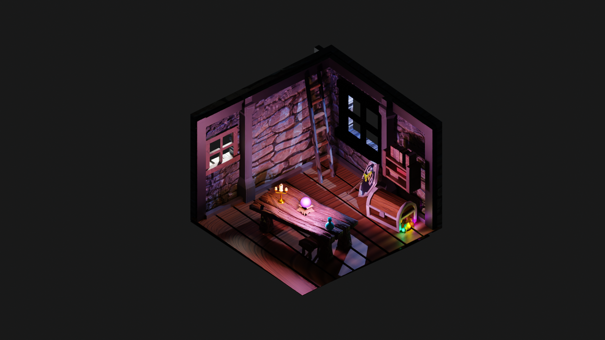
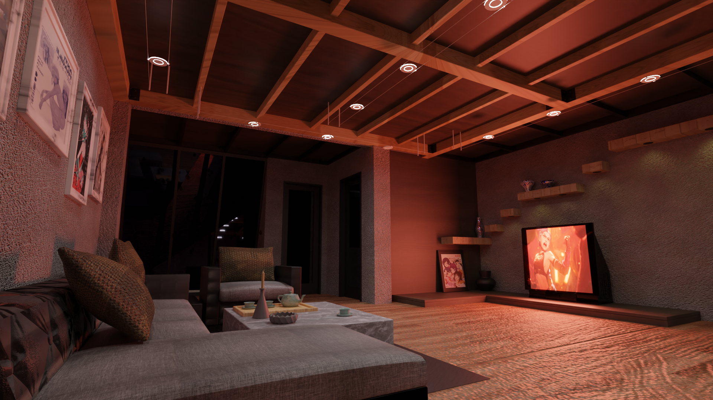

Axe Animation 3D
Les entreprises du secteur de l’image de synthèse 3D produisent des images de plus en plus étonnantes dans des secteurs d’activités qui ne cessent de s’étendre grâce aux nombreuses innovations techniques. Le secteur comprend les long-métrages d’animation ou d’effets spéciaux, les publicités, les séries d’animation, les jeux vidéos, les parcs d’attraction et les projets en réalité virtuelle ou augmentée.Lors des differentes semaine de 3D nous avons pu travailler sur differents projets. Le premier, créer et texturer une pièce remplie d'objets que nous avions crée précedement. Le deuxieme projet consisté à texturer plus realisitquement une pièce donnée.

